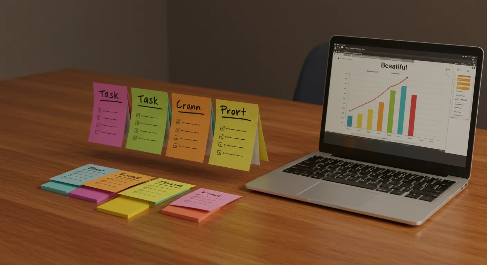

「福祉の現場で本当に使えるツールとは何か？」
このページでは、私自身の経験とWeb開発スキルを基に制作した、オリジナルのWebアプリケーションとツールをご紹介します。AIとの対話アプリから、日々の業務や学習をサポートする実用的なツールまで、すべてブラウザ上で今すぐお試しいただけます。
AI搭載・対話型アプリケーション

業務・学習支援ツール

タスク管理
AI適応型タスク管理システム
あなたのスキルや作業パターンをAIが分析し、タスクを自動で最適化。かんばん方式で、生産性向上を強力にサポートします。

タスク管理
利用者向けタスク管理ツール
難易度設定や進捗の可視化で、モチベーション維持をサポート。福祉現場での利用も想定したシンプルなツールです。
生活支援
かわいい家計簿アプリ
シンプルで直感的に使える家計簿アプリ。日々の収支を手軽に記録・管理できます。
時間管理
多機能オンライン時計
現在時刻、カレンダー、タイマーを一つに。作業時間の管理やスケジュール調整をサポートする便利なWebツールです。

開発者ツール
HTML/CSS リアルタイムエディタ
コードを書きながら瞬時に結果を確認できるWeb制作学習ツール。プログラミング教育にも活用できます。